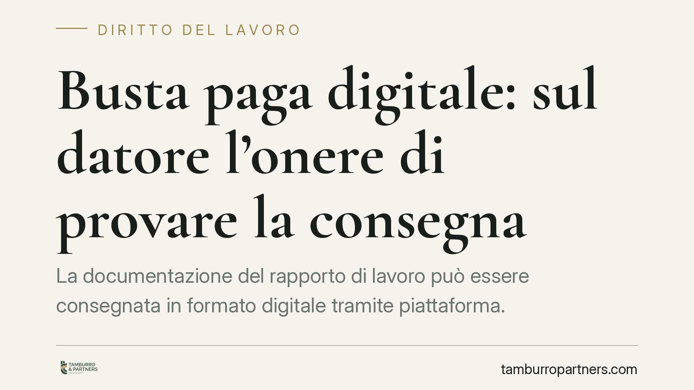

Busta paga digitale: sul datore l'onere di provare la consegna
La documentazione del rapporto di lavoro può essere consegnata in formato digitale tramite piattaforma. Ma il datore conserva l'onere di dimostrare che il lavoratore l'ha ricevuta e che il contenuto è integro. Per i documenti che contengono dichiarazioni del dipendente, inoltre, l'identificazione con credenziali non equivale a una sottoscrizione. Ecco cosa cambia per le imprese.

Il fatto
Secondo quanto riferito da una recente nota del Ministero del Lavoro, la consegna digitale di busta paga e altra documentazione del rapporto di lavoro è pienamente ammissibile tramite piattaforma informatica. L'apertura è significativa: molte aziende già distribuiscono il cedolino via portale o posta elettronica.
La nota, tuttavia, non si limita a dare il via libera. Ribadisce un principio che era già implicito nell'ordinamento: la modalità digitale è legittima a condizione che il datore sia in grado di provare la corretta trasmissione. L'onere della prova resta a suo carico.
> Nota metodologica: alla data di redazione non abbiamo potuto verificare con certezza numero di protocollo, data esatta e destinatario del quesito cui la nota risponde. Riportiamo pertanto i contenuti in forma prudente, rinviando al testo ufficiale per i riferimenti puntuali.
Inquadramento normativo
Il quadro di riferimento è il Codice dell'amministrazione digitale (d.lgs. 7 marzo 2005, n. 82, "CAD"). Due disposizioni sono centrali.
L'art. 20 CAD disciplina il valore giuridico del documento informatico. Quando il documento è sottoscritto con firma elettronica avanzata, qualificata o digitale, soddisfa il requisito della forma scritta e ha l'efficacia probatoria prevista dall'art. 2702 del codice civile: fa cioè piena prova, fino a querela di falso, della provenienza delle dichiarazioni da chi le ha sottoscritte.
L'art. 21 CAD gradua invece l'efficacia dei documenti informatici privi di firma qualificata: la loro valenza probatoria è liberamente valutabile dal giudice in base alle caratteristiche di sicurezza, integrità e immodificabilità.
Da qui discende il punto pratico. Per un documento meramente informativo – come il cedolino che il datore trasmette – ciò che conta è dimostrare quattro elementi: identificazione del destinatario, accessibilità effettiva, integrità del contenuto e tracciabilità dell'invio.
Documenti informativi e documenti dichiarativi
La distinzione è decisiva.
I documenti informativi veicolano una comunicazione dal datore al lavoratore. Qui la firma del dipendente non serve: basta provare la consegna e l'integrità.
I documenti dichiarativi contengono invece una dichiarazione di volontà o di scienza del lavoratore: si pensi a una rinuncia, a una quietanza, a un'accettazione di clausole. Per questi, la provenienza della dichiarazione dal dipendente deve essere certa.
Su questo secondo profilo la nota lascia intendere che la mera identificazione tramite SPID o CIE non sia sufficiente a conferire al documento l'efficacia probatoria piena. A nostro avviso ne discende che, per i documenti dichiarativi, occorra una firma elettronica avanzata (FEA), idonea ai sensi degli artt. 20-21 CAD a imputare la dichiarazione al lavoratore e a resistere in sede contenziosa. Si tratta, va precisato, di una lettura interpretativa: il testo ufficiale va consultato per la portata esatta dell'indicazione ministeriale.
Implicazioni pratiche
Per il datore di lavoro il messaggio è chiaro: digitalizzare si può, ma la scelta della piattaforma e della modalità di firma incide direttamente sul rischio probatorio.
In caso di accesso ispettivo dell'Ispettorato Nazionale del Lavoro (INL) o di contenzioso con il dipendente, non sarà il lavoratore a dover dimostrare di non aver ricevuto il documento: sarà l'azienda a dover provare di averlo correttamente consegnato. Un sistema che non registra log di accesso, ricevute di consegna o marche temporali espone l'impresa a un rischio concreto.
Particolare attenzione va riservata ai documenti dichiarativi: una rinuncia o una quietanza firmata con il solo SPID potrebbe rivelarsi fragile se contestata.
Cosa fare in concreto
- Verificare che la piattaforma utilizzata produca evidenze di consegna e di accesso: log, ricevute, marcature temporali conservate nel tempo.
- Distinguere i documenti meramente informativi da quelli che contengono dichiarazioni del lavoratore, mappando i flussi documentali.
- Adottare una soluzione di firma elettronica avanzata per tutti i documenti dichiarativi, non limitandosi all'identificazione con credenziali.
- Conservare la documentazione secondo criteri di integrità e immodificabilità coerenti con l'art. 21 CAD.
- Consultare il testo ufficiale della nota prima di modificare le procedure interne.
È opportuno affrontare la transizione con una verifica preventiva dei sistemi, per allineare le procedure prima che la carenza probatoria emerga in sede di controllo.
---
*Contributo informativo a cura di Tamburro & Partners - Avv. Giuseppe Tamburro. Non costituisce parere legale.*
Ogni storia di lavoro ha i suoi tempi.
Se gestisci HR e vuoi un confronto su contenzioso, ispezioni o licenziamenti, scrivi allo studio. Ti rispondiamo entro un giorno lavorativo.